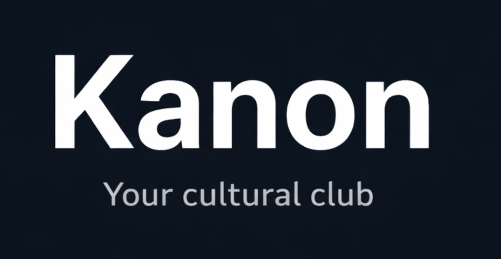
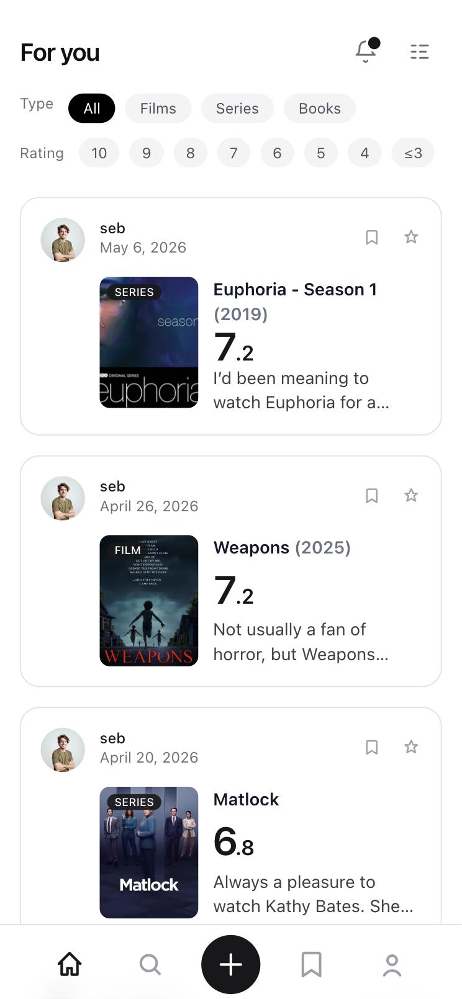
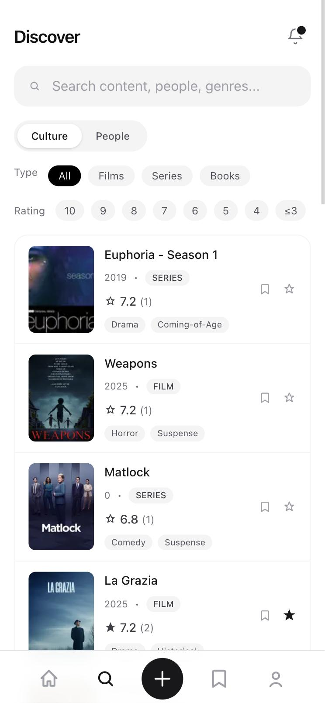
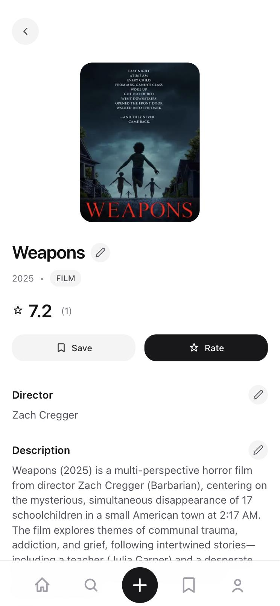
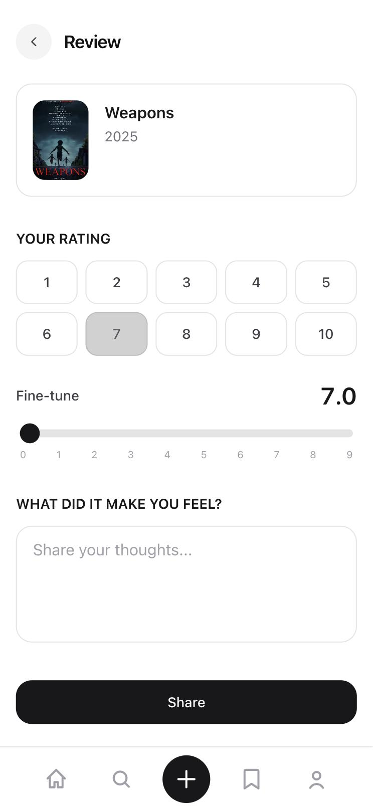

Project · 2026
Kanon
Your cultural club — one social home for the films, series and books you love.
Visit kanon.club
- Status
- Live
- Started
- February 2026
- Role
- Design & development
- Type
- Full-stack web app
The app

For You feed 
Discover 
Item page 
Rate & review
What it is
Most tracking apps cover a single medium. Kanon treats film, series and books as one thing — culture — and puts friends at the centre. You rate what you’ve watched or read, write a few lines about what it made you feel (not a critique), and follow people whose taste you trust.
The name comes from the idea of a “canon”: the works that matter to you, and the people you share them with.
What you can do
- Rate and reviewRatings run 1.0–10.0 with one decimal: tap a whole number, then fine-tune with a slider. Reviews are personal and emotional by design.
- For You feedA social feed of reviews from the people you follow.
- DiscoverBrowse the catalogue of films, series and books, or switch to find and follow people.
- Lists and saved itemsCurate lists, keep a watch/read-later shelf, and save other people’s lists.
- Taste matchA compatibility score between two users, with a shareable page for each match.
- Shareable pagesReviews, lists and matches have public links with rich previews for WhatsApp, X and other apps.
- Wiki-style item pagesAnyone can correct a title’s director, description and tags, so the catalogue improves with use.
- NotificationsFollows and reactions to your ratings.
Behind the scenes
One catalogue, three sources. Films and series come from TMDB and books from Google Books. Each is normalised into a single item model, and users can add anything that’s missing.
Built for flaky connections. Kanon runs serverless against a pooled Postgres database, so connection-pool exhaustion is normal rather than exceptional. After a production incident in March 2026, I made the app degrade gracefully: it fails fast, treats pool timeouts as “busy, retry” instead of a 500 error, and runs independent queries concurrently to cut load.
Product choices. There is no inline rating on item pages: it was tried and reverted so that rating always goes through the review flow. Handles are case-insensitive, and the public web only sees what users deliberately share.